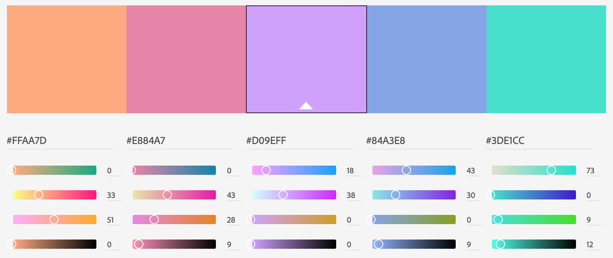

Color Scheme

I will be using #FFAA7D, #D09EFF and #3DE1CC as my main colors. I can introduce #E884A7 and #84A3E8 if needed. I decided to use the main three colors since they are unisex and happy colors, so even when the weather is not what you want it to be, at least the website can transmit positive thoughts and feelings through it's design, and more specificly, its colors.
